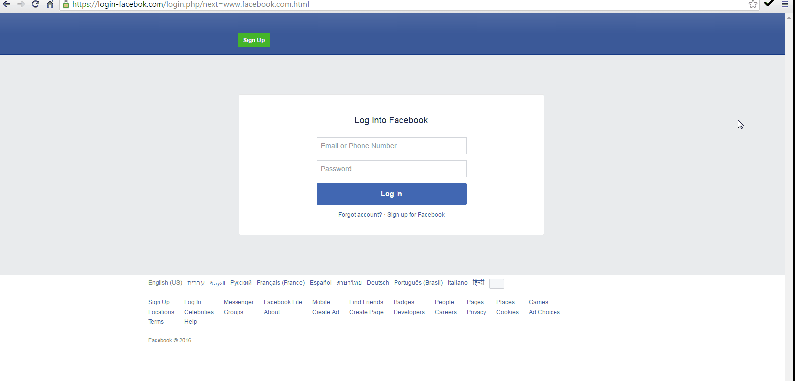
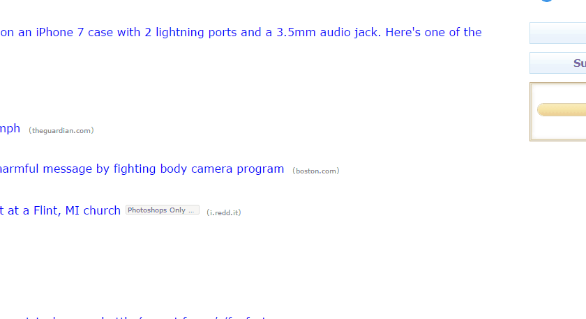

You are now going to take a quick test, in which we will show you 10 different websites.
On every page, you must decide if the website is Trusted or Suspect (or if you don't know, click "I don't know").
Please mark each site appropriately, using the Shark-King menu:

If you prefer, you can also mark sites using the Shark-King right-click menu, as shown below:

Please notice the 10-second time limit. Once the timer runs out, you will not be able to view the page anymore, however you will still be able to provide your answer.
Good luck!
מבחן ראשוני
בשלב זה, תתבקש לבצע מבחן מהיר, שבמהלכו נציג בפניך 10 אתרים שונים.
בכל אתר, תידרש להחליט האם האתר בטוח (Trusted) או חשוד (Suspect) (או אם אינך בטוח, בחר ב-"I don't know").
נא סמן כל אתר בהתאם, על ידי לחיצה על הכפתור המתאים בתפריט של Shark-King:
לנוחיותך, באפשרותך לסמן אתרים ופרסומות באמצעות לחיצת לחצן-ימני על העכבר, כדלהלן:
נא שים לב לטיימר של 10 שניות המוצג בצד המסך. לאחר 10 שניות, האתר יוסתר ולא תוכל לצפות בו, אבל עדיין תוכל לסמן את תשובתך בהתאם.